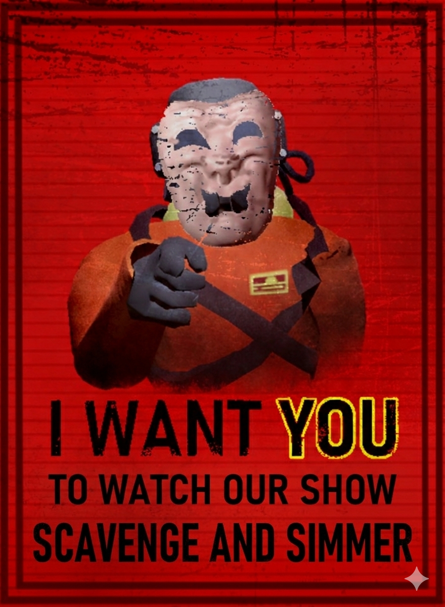

Scavenge & Simmer is a survival cooking competition unlike anything on television. Inspired by the chaos and terror of Lethal Company, contestants are dropped into dangerous, monster-infested maps with one mission: find the ingredients and cook before you become something's dinner.
Each episode sends a new group of contestants into an abandoned facility or alien landscape filled with deadly creatures lurking in every shadow. Their goal? Scavenge the map for fresh ingredients, exotic spices, and rare finds — all while staying alive. The catch: the monsters never sleep, and the clock is always ticking.
Contestants must balance speed and stealth as they hunt for ingredients. Make too much noise opening a cabinet and you might attract something you really don't want to meet. Find the perfect haul and you'll earn the chance to cook a masterpiece back at base. Get caught empty-handed — or worse, get caught at all — and you're going home.
Part cooking show. Part survival horror. All chaos. Scavenge & Simmer — where every meal could be your last.
